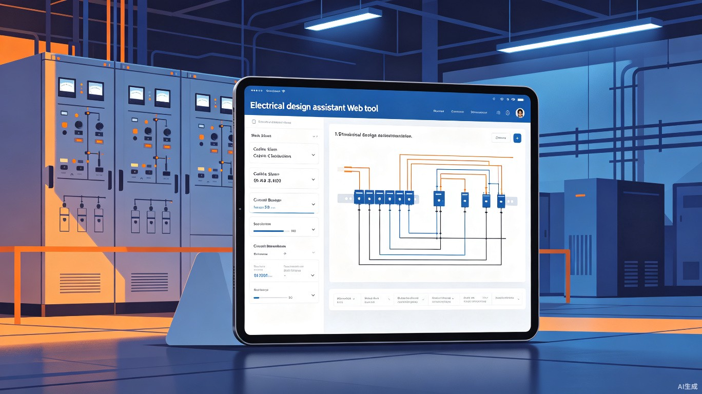
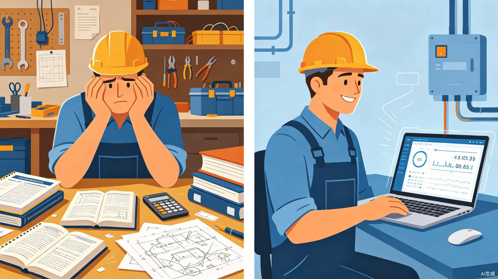
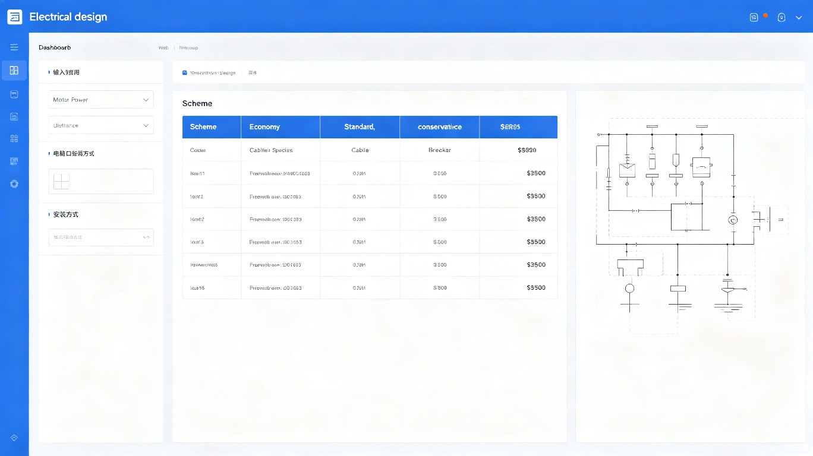

一个免费、轻量、打开浏览器就能用的电气选型工具。输入电机功率和距离，一分钟内完成电缆选型、电压降校验、断路器推荐、原理图生成、物料清单导出——每个结果都标注国标出处，敢用于真实工程。

在车间帮老师傅调试55kW变频器那次，他拉开铁皮柜翻出一本泛黄的《工厂配电设计手册》，眯着眼查了20分钟电缆载流量表。这一幕让我意识到——全中国300万电气从业者每天都在重复同样的动作，而市面上的工具没有一个真正解决了他们的需求。

商业软件：ETAP、EPLAN 动辄数万至数十万，中小企业和个人电工根本用不起
官网工具：施耐德、ABB 等品牌只推荐自家产品，缺乏中立性和全面性
手工查表：翻手册 + 按计算器 + 画CAD + 列清单，一个回路至少1-2小时
知识断层：老一辈电工的经验无法系统化传承，年轻人上手慢
永久免费：零门槛，打开浏览器即用，不绑定任何品牌
一分钟闭环：输入参数 → 自动计算 → 三套方案 → 原理图 → 物料清单
国标硬编码：所有数据来自 GB/T 16895、GB 50054 等国家标准，每个结果标注出处
经验固化：把老师傅20年的选型经验转化为一行行可复用的代码
用 TRAE 做一个网页工具，输入电机功率、距离、敷设方式这些参数，甚至直接用大白话说一句"37千瓦水泵，距配电室80米，走桥架明敷"，系统就自动算完额定电流、查好电缆截面、校验电压降、推荐断路器接触器型号，同时给出经济型、标准型、保守型三套方案让你对比选择。确定方案后，原理图自动刷新生成，物料清单一键导出Excel。
这个工具五年前做不了，五年后做就没意义了。当下的时间窗口恰好同时满足了技术成熟度和市场需求爆发两个条件。
现代浏览器原生支持 SVG 矢量图渲染、Web Worker 多线程计算、IndexedDB 本地存储。一个纯前端HTML文件就能跑完全部计算逻辑，这是五年前不可能做到的。
TRAE IDE 等 AI 编程工具让一个人4天就能完成过去需要3人团队两周的工作量。个人开发者也能快速交付专业级产品，项目可行性从"不可能"变成"很轻松"。
GB/T 16895.15-2002、GB 50054-2011、GB 50217-2018 等核心标准已全面更新定型，数据体系稳定。数字化工具可以把这些标准以最高效的方式送达一线从业者。
2025年职业教育法修订后，电气自动化专业招生规模持续扩大，百万级学生急需辅助学习工具。这个群体对免费工具的接受度和传播力极强。
支持大白话描述，"37千瓦水泵距配电室80米走桥架"一句话搞定，系统自动解析功率、距离、敷设方式等全部参数
经济型/标准型/保守型三套方案并排展示，电缆截面、断路器型号、电压降、总价一目了然，让用户自主决策
电缆载流量、电压降系数、整定值表全部硬编码，每个计算结果都标注公式出处和国标章节号，工程可信赖
确定方案后自动生成标准电机控制回路原理图（SVG格式），包含主回路和控制回路，含设备材料清单
一键导出包含断路器、接触器、热继电器、电缆的完整物料清单，型号、规格、数量、参考价一应俱全
上线后打包一个离线HTML文件，让网络不好的乡村电工和职校学生也能随时随地使用
原本翻手册加按计算器加画CAD图纸加列清单的整套流程，压缩到一分钟内闭环。
表单输入或自然语言描述，支持模糊匹配
额定电流、电缆截面、电压降校验、设备选型
经济型/标准型/保守型三套方案并排展示
原理图SVG + 物料清单Excel，开箱即用
示例输入："37千瓦水泵，距配电室80米，走桥架明敷"
系统输出：额定电流69.8A → 推荐YJV-3+1×25mm²（经济型）/ 35mm²（标准型）/ 50mm²（保守型）→ 配套断路器NSX100F-100、接触器CJX2-80、热继电器JR36-160(63-85A) → 电压降校验通过 → SVG原理图 + Excel物料清单
界面设计遵循"输入在左、输出在右"的经典工程软件布局，核心信息一屏展示，不需要任何培训就能上手。

支持表单精确输入和自然语言输入两种模式，常用参数有默认值，降低使用门槛
三套方案以卡片形式并排展示，电缆、断路器、接触器、热继电器型号和价格一目了然
标准电机控制回路原理图（SVG），内嵌设备材料清单，支持一键导出Excel
选用成熟稳定的技术栈，确保4天内完成可演示原型。架构设计兼顾在线版和离线版的部署需求。
graph TB
subgraph Frontend["前端 (Vue 3 + Vite)"]
A[自然语言输入框] --> B[参数表单]
B --> C[方案对比看板]
C --> D[原理图预览 SVG]
C --> E[物料清单]
end
subgraph Backend["后端 (Node.js + Express)"]
F[NLP 解析模块] --> G[计算引擎]
H[国标数据引擎] --> G
G --> I[方案生成器]
I --> J[SVG 原理图生成]
I --> K[Excel 导出]
end
subgraph Data["数据层"]
L[(SQLite 历史台账)]
M[硬编码国标数据]
end
A -- REST API --> F
G -- 读写 --> L
G -- 查询 --> M
Figure 3: 系统技术架构图
架构亮点：国标数据全部硬编码在 JS 模块中（不依赖数据库查询），这使得在线版和离线HTML版可以共享完全相同的计算逻辑和数据，确保结果一致性。SQLite 仅用于存储用户的历史计算记录。
这个项目最硬核的地方不在AI，而在内置的国标数据引擎。所有电缆载流量、电压降系数、整定值表都硬编码在系统里，每个结果都标注公式出处和国标章节号，敢用于真实工程。
Figure 4: 计算链条——从功率到完整方案的五步推演
| 数据模块 | 覆盖内容 | 国标来源 |
|---|---|---|
| 电机额定电流 | 0.75kW ~ 315kW 共24个标准功率等级的额定电流、功率因数、效率 | GB/T 755-2008 附录B |
| 电缆载流量 | YJV铜芯电缆，1.5~400mm² 共17个截面，4种敷设方式 | GB/T 16895.15-2002 表52-C9~C12 |
| 电缆阻抗 | 20°C导体电阻、电抗参数 | GB 50217-2018 附录E |
| 断路器选型 | MCB 6~63A + MCCB 80~630A 共19个规格 | GB 14048.2-2008 |
| 接触器选型 | AC-3使用类别，4~200kW 共17个规格 | GB 14048.4-2010 |
| 热继电器选型 | 整定电流范围 0.25~160A 共18个规格 | GB 14048.4-2010 |
| 温度校正系数 | 10~55°C 环境温度下载流量校正 | GB/T 16895.15-2002 表52-D1 |
| 并列校正系数 | 1~8根电缆并列敷设降容系数 | GB/T 16895.15-2002 表52-D2 |
可信赖性承诺：每个计算结果页面都展示完整的公式推导过程和国标出处引用。例如电压降校验会显示：ΔU% = √3×I×L×(Rcosφ+Xsinφ)/(10U)×100 = ... 以及对应的 GB 50054-2011 第6.3条标准限值。工程师可以据此进行人工复核。
施工现场需要快速选型，没有时间翻手册。离线版特别适合网络不好的工地环境。
学习电气设计时需要反复查表练习，工具可以即时验证计算结果，加速学习。
项目前期方案估算和投标报价阶段需要快速出物料清单，工具大幅提升效率。
基于 TRAE IDE 全栈开发，采用敏捷迭代方式，每天交付可运行的增量版本。
完成项目脚手架（Vue3 + Express + SQLite），搭建国标数据引擎（电缆载流量表、断路器/接触器选型表），实现核心计算逻辑（额定电流计算、电缆截面选择、电压降校验、设备选型）。
实现自然语言解析模块（支持模糊匹配和同义词识别），完成三套方案（经济型/标准型/保守型）的生成逻辑，建立后端API。
构建前端交互界面（输入面板、方案对比卡片、公式展示区），实现SVG原理图自动生成（主回路+控制回路+材料清单）。
实现Excel物料清单一键导出（ExcelJS），前后端联调，边界情况处理，性能优化，完成可演示原型。
任何项目都有风险。我们提前识别主要风险点，并制定应对策略，确保项目在4天原型期内不跑偏。
如果硬编码的载流量数据有误，将直接导致选型错误，后果严重。
应对：所有数据均来自正式出版的国标文本，交叉验证至少两个来源。在页面展示完整公式和出处，方便工程师人工复核。上线前请专业电气工程师审核。
用户输入千变万化，正则表达式可能无法覆盖所有表达方式。
应对：提供表单输入作为兜底方案；解析失败时给出友好提示并引导用户补充缺失参数；收集高频输入模式持续优化。
断路器和接触器仅收录了主流品牌常见型号，无法覆盖全部市场产品。
应对：MVP阶段先覆盖施耐德、ABB、正泰三大品牌的主流系列；后续版本通过用户反馈和社区共建持续扩充。
SVG渲染和离线版在不同浏览器上的表现可能不一致。
应对：基于标准SVG规范开发，避免使用实验性API。测试覆盖Chrome、Edge、Firefox三大浏览器。IE用户建议升级。
这个项目不追求直接变现。它的价值在于降低电气设计的门槛，让每个普通电工都有一个随身的电气专家。长期的生态价值远大于短期收费。
部署在云服务器，打开浏览器即用。支持历史记录保存和方案管理。完全免费，无注册门槛。
打包为单个HTML文件，无需安装，双击即用。数据引擎内嵌，断网也能正常计算。面向乡村电工和职校学生。
接入AI大模型实现更智能的对话式选型、增加照明回路/配电系统设计、开放API供第三方集成、社区共建国标数据库。
| 维度 | 商业软件 ETAP / EPLAN |
品牌官网工具 施耐德 / ABB |
手工查表 | 电气智能设计助手 |
|---|---|---|---|---|
| 价格 | 数万~数十万 | 免费但有限制 | 手册成本 | 永久免费 |
| 使用门槛 | ✗ 需要专业培训 | △ 需注册/登录 | ✗ 需要专业知识 | ✓ 零门槛 |
| 品牌中立 | ✓ | ✗ 仅推自家 | ✓ | ✓ |
| 离线使用 | △ 需授权 | ✗ | ✓ | ✓ HTML版 |
| 国标溯源 | △ 部分 | ✗ 无 | △ 需手动查 | ✓ 每个结果标注 |
| 输出物 | 完整图纸 | 选型报告 | 手工计算书 | 原理图+物料清单 |
| 响应速度 | △ 分钟级 | △ 秒级 | ✗ 小时级 | ✓ 秒级 |
让每个普通电工——无论是在一线城市的设计院，还是在偏远乡镇的配电房——都有一个随身的电气专家。不需要翻手册，不需要买软件，不需要连网络。打开浏览器，输入一句话，一分钟拿到工程级选型方案。
核心信念：专业工具不应该有价格门槛。当300万电气从业者的日常痛点可以用一个网页解决的时候，最好的商业模式就是——不做商业模式，让工具本身成为价值。